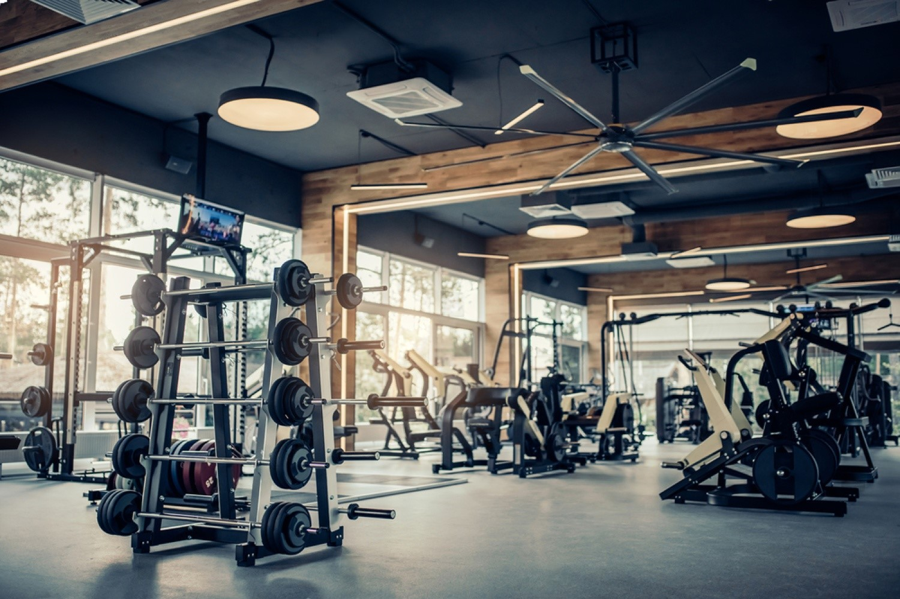

Fitness este un termen folosit pentru a acoperi o arie largă de activități fizice care cuprind antrenarea musculaturii, streching-ul și exercițiile cardio, ce au ca scop menținerea organismului cât mai sănătos și tonifiat.


Am sa va ofer niste recomandari legate de fitness.
